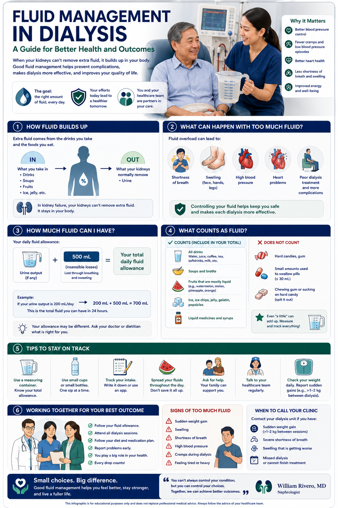

Why Fluid Builds Up Between Sessions Bakit Naipon ang Likido sa Pagitan ng mga Sesyon Ngano nga Nagtipon ang Likido Tali sa mga Sesyon Bakit Naipon ing Likido king Pagtali ning Deng Sesyon

Healthy kidneys filter excess fluid continuously — every hour, every day. In a dialysis patient, that function is gone. Everything you drink, plus the water hidden inside food, accumulates until your next session. The average Filipino dialysis patient gains 2–4 kg between sessions. But fluid does not just sit quietly — it pressurizes blood vessels, overloads the heart, and can flood the lungs if unchecked. Most dialysis-related cardiac arrests happen Monday morning, after the long weekend gap — not because dialysis failed, but because of what was eaten and drunk on Saturday and Sunday. Ang mga malusog na bato ay nag-filter ng labis na likido nang tuloy-tuloy — bawat oras, bawat araw. Sa isang pasyente ng dialysis, nawala na ang tungkuling iyon. Ang lahat ng iyong iniinom, kasama ang tubig na nakatago sa loob ng pagkain, ay naipon hanggang sa iyong susunod na sesyon. Ang average na Pilipinong pasyente ng dialysis ay nakakakuha ng 2–4 kg sa pagitan ng mga sesyon. Karamihan sa mga cardiac arrest na may kaugnayan sa dialysis ay nangyayari tuwing Lunes ng umaga, pagkatapos ng matagal na weekend gap. Ang himsog nga mga kidney nag-filter sa sobra nga likido nang padayon — matag oras, matag adlaw. Sa usa ka pasyente sa dialysis, nawala na kining katungdanan. Ang tanan nga imong giinom, kasama ang tubig nga nakatago sulod sa pagkaon, nagtipon hangtod sa imong sunod nga sesyon. Ang average nga Pilipinong pasyente sa dialysis nakakuha og 2–4 kg tali sa mga sesyon. Kadaghanan sa cardiac arrests nga may kaugnayan sa dialysis mahitabo sa Lunes sa buntag, pagkahuman sa taas nga weekend gap. Deng malusog a batu nag-filter ning labis a likido nang tuloy-tuloy — bawat oras, bawat araw. King isang pasyente ning dialysis, nawala na ing tungkuling iyon. Sablang ating iniinom, kasama ing tubig a nakatago king laub ning pagkain, naipon anggang king susunod a sesyon mo. Ing average a Pilipinong pasyente ning dialysis nakakakuha ning 2–4 kg sa pagtali ning deng sesyon. Karamihan ning deng cardiac arrest a may kaugnayan king dialysis nangyayari king Lunes king umaga, pagkatapos ning matagal a weekend gap.
Heart effectsMga epekto sa pusoMga epekto sa kasingkasingDeng epekto king puso
Excess fluid raises blood pressure and blood volume, forcing the heart to pump harder. Chronic fluid overload leads to left ventricular hypertrophy — the heart enlarges and stiffens — dramatically increasing risk of sudden cardiac death. High ultrafiltration rates to remove large fluid gains also cause myocardial stunning per session. Ang labis na likido ay nagpapataas ng presyon ng dugo at dami ng dugo, pinipilit ang puso na mag-pump nang mas malakas. Ang talamak na fluid overload ay nagdudulot ng left ventricular hypertrophy — ang puso ay lumalaki at nagiging matigas — lubos na nagpapataas ng panganib ng biglaang pagkamatay ng puso. Ang sobra nga likido nagpataas sa presyon sa dugo ug dami sa dugo, nagpugos sa kasingkasing nga mag-pump nga mas kusog. Ang kronikong fluid overload nagdala sa left ventricular hypertrophy — ang kasingkasing molapad ug morig — grabe nagpataas sa risgo sa kalit nga pagkamatay sa puso. Ing labis a likido nagpapataas ning presyon ning dala at dami ning dala, pinipilit ing puso na mag-pump nang mas malakas. Ing talamak a fluid overload nagdudulot ning left ventricular hypertrophy — ing puso lumalaki at nagiging matigas — lubos nagpapataas ning panganib ning biglaang pagkamatay ning puso.
Lung effectsMga epekto sa bagaMga epekto sa bagaDeng epekto king deng baga
Severe fluid overload causes pulmonary edema — fluid floods the air sacs of the lungs. Symptoms: sudden breathlessness, inability to lie flat, frothy sputum. This is a medical emergency requiring immediate dialysis. The warning sign that develops earlier is waking at night needing to sit upright to breathe (orthopnea). Ang matinding fluid overload ay nagdudulot ng pulmonary edema — ang likido ay bumabaha sa mga air sac ng mga baga. Mga sintomas: biglaang pangangapos ng hininga, hindi makahiga nang patag, bulang plema. Ito ay isang medikal na emergency. Ang babala ay ang pagkagising sa gabi na kailangan umupo para huminga. Ang grabe nga fluid overload nagdala sa pulmonary edema — ang likido nangbaha sa mga air sac sa mga baga. Mga sintomas: kalit nga kakulang sa gininhawa, dili makapaghigda nang patag, bulahaw nga plema. Kini medikal nga emergency. Ang babala mao ang pagmata sa gabii nga kinahanglan mulingkod para makaginhawa. Ing matinding fluid overload nagdudulot ning pulmonary edema — ing likido bumabaha king deng air sac ning deng baga. Deng sintomas: biglaang pangangapos ning hininga, hindi makahiga nang patag, bulang plema. Iti isang medikal a emergency. Ing babala ing pagkagising king gabi na kailangan umupo para huminga.
Why rapid removal is also dangerousBakit ang mabilis na pag-aalis ay mapanganib dinNgano nga ang paspas nga pagtangtang delikado usabBakit ing mabilis a pag-aalis mapanganib din
Removing too much fluid too fast during dialysis (high ultrafiltration rate, or UFR) causes intradialytic hypotension — a BP crash that triggers cramps, dizziness, and vomiting and can cause myocardial and brain injury. UFR >13 mL/kg/hr is independently associated with higher mortality. Preventing large gains prevents dangerous rapid removal. Ang pag-aalis ng masyadong maraming likido nang masyadong mabilis (mataas na ultrafiltration rate, o UFR) ay nagdudulot ng intradialytic hypotension — isang pagbaba ng BP na nagdudulot ng mga pulikat, pagkahilo, at pagsusuka at maaaring magdulot ng pinsala sa puso at utak. Ang UFR >13 mL/kg/hr ay independyenteng nauugnay sa mas mataas na mortality. Ang pagtangtang sa labis nga likido nang paspas kaayo (taas nga ultrafiltration rate, o UFR) nagdala sa intradialytic hypotension — usa ka paghulog sa BP nga nagdala sa mga pulikat, pagkahilo, ug pagsuka ug mahimong magdala sa pinsala sa puso ug utok. Ang UFR >13 mL/kg/hr independyenteng nalangkit sa mas taas nga mortality. Ing pag-aalis ning masyadong dakal a likido nang masyadong mabilis (mataas a ultrafiltration rate, o UFR) nagdudulot ning intradialytic hypotension — isang pagbaba ning BP a nagdudulot ning deng pulikat, pagkahilo, at pagsusuka at maaaring magdulot ning pinsala king puso at utak. Ing UFR >13 mL/kg/hr independyenteng nauugnay king mas mataas a mortality.
What Is Your Dry Weight? Ano ang Iyong Dry Weight? Unsa ang Imong Dry Weight? Nanung ing Dry Weight Mo?
Your dry weight (also called target weight or post-dialysis target weight) is the weight you should reach at the end of each session — the weight at which your blood pressure is normal, your lungs are clear, and your body carries no excess fluid. Think of it as your “true” body weight without any fluid burden. Every weight gain between sessions is measured relative to your dry weight. Ang iyong dry weight (tinatawag din na target weight o post-dialysis target weight) ay ang timbang na dapat mong maabot sa katapusan ng bawat sesyon — ang timbang kung saan normal ang iyong presyon ng dugo, malinaw ang iyong mga baga, at walang labis na likido ang katawan. Isipin ito bilang iyong “tunay” na timbang ng katawan nang walang pabigat ng likido. Ang imong dry weight (gitawag usab nga target weight o post-dialysis target weight) mao ang timbang nga kinahanglan nimong maabot sa katapusan sa matag sesyon — ang timbang diin normal ang imong presyon sa dugo, limpyo ang imong mga baga, ug walay sobra nga likido ang lawas. Hunahunaa kini isip imong “tinuod” nga timbang sa lawas nga walay pabug-at sa likido. Ing dry weight mo (tinatawag din a target weight o post-dialysis target weight) ing timbang a dapat mong maabot king katapusan ning bawat sesyon — ing timbang kung nanu normal ing presyon ning dala mo, maliwanag deng baga mo, at wala pang labis a likido ing katawan. Isipin iti bilang “tunay” a timbang ning katawan mo nang wala pang pabigat ning likido.
Your dry weight changes over time — tell your nephrologistNagbabago ang iyong dry weight sa paglipas ng panahon — sabihin sa iyong nephrologistNagbag-o ang imong dry weight sa paglabay sa panahon — sultihi ang imong nephrologistNagbabago ing dry weight mo sa paglipas ning panahon — sabihin king nephrologist mo
If you lose muscle (sarcopenia is common in CKD), your true dry weight falls — but dialysis keeps removing to the old target, causing cramps and hypotension. If you gain real body weight (fat), the target must rise. Signs that your dry weight needs reassessing: persistent cramps during dialysis, blood pressure consistently low post-session, clothes feel looser, unexplained weight changes. Report these at your next visit. Kung nawalan ka ng kalamnan (ang sarcopenia ay karaniwan sa CKD), ang iyong tunay na dry weight ay bumababa — ngunit patuloy na inaalis ng dialysis sa lumang target, nagdudulot ng mga pulikat at hypotension. Mga palatandaan na kailangan ng reassessment: patuloy na mga pulikat sa dialysis, patuloy na mababang presyon ng dugo pagkatapos ng sesyon, ang mga damit ay mas maluwag, hindi maipaliwanag na mga pagbabago ng timbang. Kon nawad-an ka sa kalamnan (ang sarcopenia kasagaran sa CKD), ang imong tinuod nga dry weight mohulog — apan ang dialysis padayon nagkuha sa daan nga target, nagdala sa mga pulikat ug hypotension. Mga timailhan nga kinahanglan reassessment: padayon nga mga pulikat sa dialysis, padayon nga ubos nga presyon sa dugo pagkahuman sa sesyon, ang mga bisti mas maluag, dili maipaliwanag nga mga pagbabago sa timbang. Kung nawalan ka ning kalamnan (ing sarcopenia karaniwang king CKD), ing tunay a dry weight mo bumabagsak — ngunit patuloy na nag-aalis ing dialysis king lumang target, nagdudulot ning deng pulikat at hypotension. Deng palatandaan na kailangan ning reassessment: patuloy a deng pulikat king dialysis, patuloy a mababang presyon ning dala pagkatapos ning sesyon, deng damit mas maluwag, hindi maipaliwanag a deng pagbabago ning timbang.
Fluid & Weight Status Calculator Calculator ng Katayuan ng Likido at Timbang Calculator sa Kahimtang sa Likido ug Timbang Calculator ning Katayuan ning Likido at Timbang
Enter your details below to calculate your current fluid gain status, safe daily fluid allowance, and how much fluid you need to limit today. Ilagay ang iyong mga detalye sa ibaba upang kalkulahin ang iyong kasalukuyang katayuan ng pagtaas ng likido, ligtas na pang-araw-araw na fluid allowance, at kung gaano karaming likido ang kailangan mong limitahan ngayon. Isulod ang imong mga detalye sa ubos aron kalkulahon ang imong kasalukuyang kahimtang sa pagtaas sa likido, luwas nga adlaw-adlaw nga fluid allowance, ug kung pila ka likido ang kinahanglan nimong limitahan karon. Ilagay deng detalye mo sa ibaba para kalkulahin ing kasalukuyang katayuan ning pagtaas ning likido mo, ligtas a pang-araw-araw a fluid allowance, at kung magkanu a likido ing kailangan mong limitahan ngayon.
🧮 Interdialytic Weight & Fluid CalculatorInterdialytic Weight & Fluid CalculatorInterdialytic Weight & Fluid CalculatorInterdialytic Weight & Fluid Calculator
For hemodialysis patients. Enter your weight and urine output to get personalized targets. Para sa mga pasyente ng hemodialysis. Ilagay ang iyong timbang at dami ng ihi para makakuha ng mga personalized na target. Alang sa mga pasyente sa hemodialysis. Isulod ang imong timbang ug dami sa ihi para makakuha sa mga personalized nga target. Para king deng pasyente ning hemodialysis. Ilagay ing timbang mo at dami ning ihi para makakuha ning deng personalized a target.
Weight GainedTimbang na NakuhaTimbang nga NakuhaTimbang a Nakuha
Rate per DayBilis Bawat ArawRate Matag AdlawRate Bawat Araw
Daily Fluid AllowancePang-araw-araw na Fluid AllowanceAdlaw-adlaw nga Fluid AllowancePang-araw-araw a Fluid Allowance
Ultrafiltration Rate Est.Tinatayang Ultrafiltration RateGibanabana nga Ultrafiltration RateTinatagyang Ultrafiltration Rate
⚠ This calculator is for educational guidance only. Your actual fluid allowance must be set by your nephrologist based on your clinical status, residual kidney function, blood pressure, and dialysis prescription. Never restrict fluids to the point of dehydration. Ang calculator na ito ay para sa edukasyonal na gabay lamang. Ang iyong aktwal na fluid allowance ay dapat itakda ng iyong nephrologist batay sa iyong klinikal na katayuan, natitirang pag-andar ng bato, presyon ng dugo, at prescription ng dialysis. Huwag kailanman paghigpitan ang mga likido hanggang sa punto ng dehydration. Kining calculator alang sa edukasyonal nga gabay lamang. Ang imong aktwal nga fluid allowance kinahanglan itakda sa imong nephrologist base sa imong klinikal nga kahimtang, nahibilin nga pag-andar sa kidney, presyon sa dugo, ug prescription sa dialysis. Ayaw kailanman pagdili sa mga likido hangtod sa punto sa dehydration. Iting calculator para king edukasyonal a gabay lamang. Ing aktwal a fluid allowance mo dapat itakda ning nephrologist mo batay king klinikal a katayuan mo, natitirang paggawa ning batu, presyon ning dala, at prescription ning dialysis. Huwag kailanman paghigpitan deng likido anggang king punto ning dehydration.
Safe Weight Gain Targets Between Sessions Mga Ligtas na Target ng Pagtaas ng Timbang sa Pagitan ng mga Sesyon Mga Luwas nga Target sa Pagtaas sa Timbang Tali sa mga Sesyon Deng Ligtas a Target ning Pagtaas ning Timbang sa Pagtali ning Deng Sesyon
The 3-day weekend gap is the most dangerous periodAng 3-araw na weekend gap ang pinakamasamang panahonAng 3-adlaw nga weekend gap ang pinakamasamang panahonIng 3-araw a weekend gap ing pinaka-mapanganib a panahon
On a Mon/Wed/Fri schedule, the Fri–Mon gap is 3 days. Research shows Monday HD sessions carry the highest rate of intradialytic cardiac events. If you are more than 3 kg above dry weight on Sunday evening, or feel breathless or cannot lie flat — call your dialysis center. Do not wait until Monday. Sa isang Lun/Miy/Biy na iskedyul, ang Biy–Lun na agwat ay 3 araw. Nagpapakita ang pananaliksik na ang mga sesyon ng HD tuwing Lunes ay may pinakamataas na rate ng cardiac events. Kung higit sa 3 kg ka na sa itaas ng dry weight tuwing Linggo ng gabi, o nangangapos ng hininga o hindi ka makapaghiga nang patag — tawagan ang iyong dialysis center. Huwag maghintay hanggang Lunes. Sa usa ka Lun/Miy/Biy nga iskedyul, ang Biy–Lun nga gap 3 ka adlaw. Nagpakita ang panukiduki nga ang mga sesyon sa HD sa Lunes adunay pinakataas nga rate sa cardiac events. Kon labaw sa 3 kg ka sa ibabaw sa dry weight sa gabii sa Domingo, o nagkabog sa gininhawa o dili ka makapaghigda nang patag — tawagan ang imong dialysis center. Ayaw maghuwat hangtod sa Lunes. King isang Lun/Miy/Biy a iskedyul, ing Biy–Lun a agwat 3 araw. Nagpapakita ing pananaliksik na deng sesyon ning HD king Lunes maki pinakamataas a rate ning cardiac events. Kung higit sa 3 kg ka nang sa itaas ning dry weight king Linggo ng gabi, o nangangapos ning hininga o hindi ka makahiga nang patag — tawagan ing dialysis center mo. Huwag maghintay anggang Lunes.
Sodium — The Real Driver of Fluid Gain Sodium — Ang Tunay na Sanhi ng Pagtaas ng Likido Sodium — Ang Tinuod nga Hinungdan sa Pagtaas sa Likido Sodium — Ing Tunay a Sanhi ning Pagtaas ning Likido
Most patients think fluid overload is about drinking too much water. The real problem is sodium. Every gram of sodium you eat holds about 200 mL of water in your body. The more sodium you eat, the thirstier you become, the more you drink, and the more fluid you retain. Controlling sodium is more powerful than restricting water intake directly. The target for dialysis patients is less than 2,000 mg sodium per day (approximately 5g salt or 1 teaspoon). Karamihan ng mga pasyente ay nag-iisip na ang fluid overload ay tungkol sa pag-inom ng masyadong maraming tubig. Ang tunay na problema ay ang sodium. Ang bawat gramo ng sodium na iyong kinakain ay nagtatago ng humigit-kumulang 200 mL ng tubig sa iyong katawan. Ang pagkontrol ng sodium ay mas makapangyarihan kaysa sa direktang paghihigpit ng paggamit ng tubig. Ang target para sa mga pasyente ng dialysis ay mas mababa sa 2,000 mg sodium bawat araw (humigit-kumulang 5g ng asin o 1 kutsarita). Kadaghanan sa mga pasyente naghunahuna nga ang fluid overload bahin sa pag-inom sa daghan kaayong tubig. Ang tinuod nga problema ang sodium. Ang matag gramo sa sodium nga imong gikuha nagtipig og mga 200 mL sa tubig sa imong lawas. Ang pagkontrol sa sodium mas gamhanan kaysa sa direktang pagtugyan sa paggamit sa tubig. Ang target para sa mga pasyente sa dialysis ubos sa 2,000 mg sodium matag adlaw (mga 5g asin o 1 kutsara). Karamihan ning deng pasyente nag-iisip na ing fluid overload tungkol king pag-inom ning masyadong dakal a tubig. Ing tunay a problema ing sodium. Bawat gramo ning sodium a ating kinakain nagtatago ning mga 200 mL ning tubig king katawan mo. Ing pagkontrol ning sodium mas makapangyarihan kaysa king direktang paghihigpit ning paggamit ning tubig. Ing target para king deng pasyente ning dialysis mas mababa sa 2,000 mg sodium bawat araw (mga 5g asin o 1 kutsarita).
Sodium in Common Filipino Foods Sodium sa Mga Karaniwang Pagkain ng Pilipino Sodium sa mga Kasagarang Pagkaon sa Pilipino Sodium king Deng Karaniwang Pagkain ning Pilipino
Patis (1 tbsp)
67% of daily limit in one spoon67% ng limitasyon sa isang kutsara67% sa limitasyon sa usa ka kutsara67% ning limitasyon king metung a kutsara
Instant noodles (1 pack)
Entire daily limit in one pack — use half the seasoning or lessBuong limitasyon sa isang pakete — gumamit ng kalahati ng seasoning o mas kauntiTibuok adlaw-adlaw nga limitasyon sa usa ka pakete — gamita ang katunga sa seasoning o mas gamayBuong limitasyon king metung a pakete — gamitin ing katunga ning seasoning o mas kaunti
Toyo / Soy sauce (1 tbsp)
Use low-sodium brand; limit to drops, not spoonfulsGumamit ng low-sodium brand; limitahan sa mga patak, hindi sa kutsaraGamita ang low-sodium brand; limitahan sa mga patak, dili sa kutsaraGamitin ing low-sodium brand; limitahan king deng patak, hindi king kutsara
Bagoong (1 tsp)
24% of daily limit — easy to overconsume24% ng limitasyon — madaling labisan24% sa limitasyon — dali masobran24% ning limitasyon — madaling labisan
Canned sardines (1 can)
Drain & rinse to reduce sodium by ~30%Alisan ng sabaw at hugasan para mabawasan ang sodium ng ~30%Patubigan ug hugasan para makunhuran ang sodium og ~30%Alisan ning sabaw at hugasan para mabawasan ing sodium ning ~30%
Processed cheese (1 slice)
Hidden in sandwiches and snacksNakatago sa mga sandwich at meryendaNakatago sa mga sandwich ug meryendaNakatago king deng sandwich at meryenda
Plain boiled rice (1 cup)
Rice itself is not the sodium problemAng bigas mismo ay hindi ang sodium na problemaAng bugas mismo dili ang sodium nga problemaIng bigas mismo hindi ing sodium a problema
Fresh banana (1 pc)
Negligible sodium — but high in potassium (restrict for CKD Stages 4–5)Kaunting sodium — ngunit mataas sa potassium (i-restrict para sa CKD Stages 4–5)Gamay nga sodium — apan taas sa potassium (i-restrict alang sa CKD Stages 4–5)Kaunting sodium — ngunit mataas king potassium (i-restrict para king CKD Stages 4–5)
Daily Strategies That Work Mga Pang-araw-araw na Estratehiya na Gumagana Mga Adlaw-adlaw nga Estratehiya nga Molihok Deng Pang-araw-araw a Estratehiya a Gumagana
Weigh yourself every morning — same time, same scale, before eatingTimbangin ang iyong sarili tuwing umaga — parehong oras, parehong timbangan, bago kumainTimbanga ang imong kaugalingon matag buntag — samang oras, samang timbangan, sa wala pa mokaonTimbangin ing sarili mo bawat umaga — parehong oras, parehong timbangan, bago kumain
Compare to your dry weight. If you are already 1.5 kg above dry weight the morning after dialysis, your intake the previous day was too high. Daily weighing is the only early warning system you have. If a scale is not affordable, ask your dialysis center — some provide scales or check weight at each visit. Ikumpara sa iyong dry weight. Kung 1.5 kg ka nang nasa itaas ng dry weight sa umaga pagkatapos ng dialysis, ang iyong paggamit noong nakaraang araw ay masyadong mataas. Ang pang-araw-araw na pagtimbang ang tanging maagang sistema ng babala na mayroon ka. Ikumpara sa imong dry weight. Kon 1.5 kg ka na sa ibabaw sa dry weight sa buntag pagkahuman sa dialysis, ang imong paggamit sa miaging adlaw labaw kaayo. Ang adlaw-adlaw nga pagtimbang mao ang imong tanging sistemang babala. Ikumpara king dry weight mo. Kung 1.5 kg ka nang nasa itaas ning dry weight king umaga pagkatapos ning dialysis, ing paggamit mo noong nakaraang araw masyadong mataas. Ing pang-araw-araw a pagtimbang ing tanging maagang sistema ning babala a meron ka.
Manage thirst at its source — not with waterPamahalaan ang uhaw sa pinagmumulan nito — hindi sa pamamagitan ng tubigDumalaon ang pagkauhaw sa pinagmulang nito — dili sa tubigPamahalaan ing uhaw king pinagmumulan niti — hindi sa pamamagitan ning tubig
Thirst in dialysis patients is caused by sodium, not dehydration. Tricks that work without drinking: rinse your mouth with cold water and spit; chew sugar-free gum; suck a small ice cube slowly (lasts longer, less fluid); eat cold foods rather than hot; avoid salty snacks (they trigger thirst within minutes). Remove salt from the table entirely. Ang uhaw sa mga pasyente ng dialysis ay sanhi ng sodium, hindi ng dehydration. Mga trick na gumagana nang hindi umiinom: banlawan ang bibig ng malamig na tubig at ilura; ngumuyam ng sugar-free na gum; sumipsip ng maliit na ice cube nang dahan-dahan; kumain ng malamig na pagkain; iwasan ang maalat na meryenda. Alisin ang asin sa mesa nang buo. Ang pagkauhaw sa mga pasyente sa dialysis gikan sa sodium, dili sa dehydration. Mga trick nga molihok nga wala moinom: banawan ang baba sa bugnaw nga tubig ug luwaa; nguya og sugar-free nga gum; sip-a og gamay nga ice cube nang hinay-hinay; kumaa og bugnaw nga pagkaon; likayi ang maasin nga meryenda. Kuhaa ang asin gikan sa lamesa nang hingpit. Ing uhaw king deng pasyente ning dialysis sanhi ning sodium, hindi ning dehydration. Deng trick a gumagana nang hindi umiinom: banlawan ing bibig ning malamig a tubig at ilura; ngumuyam ning sugar-free a gum; sumipsip ning maliit a ice cube nang dahan-dahan; kumain ning malamig a pagkain; iwasan deng maalat a meryenda. Alisin ing asin king mesa nang buo.
Use a visual fluid container to track your daily allowanceGumamit ng visual na lalagyan ng likido upang subaybayan ang iyong pang-araw-araw na allowanceGamita ang usa ka visual nga sudlanan sa likido aron bantayan ang imong adlaw-adlaw nga allowanceGamitin ing visual a lalagyan ning likido para bantayan ing pang-araw-araw a allowance mo
Fill a pitcher or bottle with your allowed fluid for the day. Every time you drink anything, remove that volume from the container. When it is empty, stop. Seeing the physical amount remaining is far more effective than mental counting. Keep the container in a visible location so all family members can see it. Punan ang isang pitsel o bote ng iyong pinahintulutang likido para sa araw. Sa tuwing uminom ka ng anuman, alisin ang daming iyon mula sa lalagyan. Kapag wala na, ihinto. Ang pagkita ng pisikal na dami na natitira ay mas epektibo kaysa sa mental na pagbibilang. Panatilihin ang lalagyan sa isang nakikitang lugar. Pun-a ang usa ka balde o bote sa imong gipalugtan nga likido alang sa adlaw. Sa matag higayon nga moinom ka sa bisan unsa, kuhaa kaning dami gikan sa sudlanan. Kon wala na, hunong. Ang pagkita sa pisikal nga dami nga nahibilin mas epektibo kaysa sa mental nga pagbilang. Ibutang ang sudlanan sa usa ka makita nga lugar. Punan ing isang pitsel o bote ning pinahintulutang likido mo para king araw. Bawat oras a uminom ka ning aninuman, alisin ing daming iyon mula king lalagyan. Kapag wala na, ihinto. Ing pagkita ning pisikal a dami a natitira mas epektibo kaysa king mental a pagbibilang. Panatilihin ing lalagyan king isang nakikitang lugar.
Extra strictness the day before dialysis — especially SundayDagdag na kahigpitan sa araw bago ang dialysis — lalo na tuwing LinggoDugang nga kahigpitan sa adlaw sa wala pa ang dialysis — ilabi na sa DomingoDagdag a kahigpitan king araw bago ning dialysis — lalu na king Linggo
Sunday (for Mon/Wed/Fri schedules) is the most critical day. Minimal sodium, minimal fluids, weigh yourself before bed. If you are already more than 2.5 kg above dry weight, call your dialysis center that evening — do not wait until Monday. The day after dialysis (Tuesday/Thursday/Saturday): your strictest sodium day, to give yourself a buffer before the next gap. Ang Linggo (para sa Lun/Miy/Biy na iskedyul) ang pinaka-kritikal na araw. Minimal na sodium, minimal na likido, timbangin ang iyong sarili bago matulog. Kung higit sa 2.5 kg ka nang nasa itaas ng dry weight, tawagan ang iyong dialysis center nang gabi na iyon — huwag maghintay hanggang Lunes. Ang Domingo (alang sa Lun/Miy/Biy nga iskedyul) ang pinaka-kritikal nga adlaw. Minimal nga sodium, minimal nga likido, timbanga ang imong kaugalingon sa wala pa matulog. Kon labaw sa 2.5 kg ka na sa ibabaw sa dry weight, tawagan ang imong dialysis center nianang gabii — ayaw maghuwat hangtod sa Lunes. Ing Linggo (para king Lun/Miy/Biy a iskedyul) ing pinaka-kritikal a araw. Minimal a sodium, minimal a likido, timbangin ing sarili mo bago matulog. Kung higit sa 2.5 kg ka nang nasa itaas ning dry weight, tawagan ing dialysis center mo nang gabi na iyon — huwag maghintay anggang Lunes.
Daily Fluid Self-Monitoring Checklist Pang-araw-araw na Checklist ng Self-Monitoring ng Likido Adlaw-adlaw nga Checklist sa Self-Monitoring sa Likido Pang-araw-araw a Checklist ning Self-Monitoring ning Likido
- Weigh myself first thing every morning — before eating or drinking — record in my dialysis logTimbangin ang iyong sarili una sa umaga — bago kumain o uminom — itala sa aking dialysis logTimbanga ang imong kaugalingon una sa matag buntag — sa wala pa mokaon o moinom — irehistro sa akong dialysis logTimbangin ing sarili ko una king umaga — bago kumain o uminom — itala king dialysis log ku
- No patis, bagoong, toyo, or instant noodle seasoning packets todayWalang patis, bagoong, toyo, o mga packet ng seasoning ng instant noodles ngayonWalay patis, bagoong, toyo, o mga packet sa seasoning sa instant noodles karonWala patis, bagoong, toyo, o deng packet ning seasoning ning instant noodles ngayon
- Track every glass, cup, and bowl of fluid using my container methodSubaybayan ang bawat baso, tasa, at mangkok ng likido gamit ang aking paraan ng lalagyanBantayan ang matag baso, tasa, ug bowl sa likido gamit ang akong pamaagi sa sudlananBantayan bawat baso, tasa, at mangkok ning likido gamit ing paraan ku ning lalagyan
- Eat soup solids only — discard the broth completelyKainin ang mga solid ng sabaw lamang — itapon ang sabaw nang buoKaona ang mga solid sa sabaw lamang — isalibay ang sabaw nang hingpitKainin deng solid ning sabaw lamang — itapon ing sabaw nang buo
- If weight is ≥2 kg above dry weight, call my dialysis center immediately — do not wait for next sessionKung ang timbang ay ≥2 kg sa itaas ng dry weight, tawagan kaagad ang aking dialysis center — huwag maghintay para sa susunod na sesyonKon ang timbang ≥2 kg sa ibabaw sa dry weight, tawagan dayon ang akong dialysis center — ayaw maghuwat alang sa sunod nga sesyonKung ing timbang ≥2 kg sa itaas ning dry weight, tawagan agad ing dialysis center ku — huwag maghintay para king susunod a sesyon
Go to the Emergency Room or Call Your Dialysis Center If: Pumunta sa Emergency Room o Tawagan ang Iyong Dialysis Center Kung: Punta sa Emergency Room o Tawagan ang Imong Dialysis Center Kon: Pumunta king Emergency Room o Tawagan ing Dialysis Center Mo Kung:
🚨 Fluid Overload Emergency SignsMga Palatandaan ng Emergency na Fluid OverloadMga Timailhan sa Emergency nga Fluid OverloadDeng Palatandaan ning Emergency a Fluid Overload
Track Your Wellbeing — Validated Patient-Reported Outcome MeasuresSubaybayan ang Iyong Kalusugan — Mga Napatunayan na Pansukat ng Kalidad ng BuhayI-monitor ang Imong Kaayohan — Mga Napatunayan nga Sukod sa Kalidad sa KinabuhiSubaybayan ing Kalusugan Mo — Deng Napatunayan a Sukat ning Kalidad ning Buhay
Fluid overload causes shortness of breath, swelling, poor sleep, and fatigue — symptoms that are captured directly by these three validated tools. Tracking your symptom burden helps your nephrologist assess whether your fluid targets and dry weight need adjustment.Ang sobrang likido ay nagdudulot ng hika, pamamaga, mahinang tulog, at pagod — mga sintomas na direktang nasusukat ng tatlong napatunayan na kasangkapang ito. Ang pagsubaybay sa iyong pasanin ng sintomas ay tumutulong sa iyong nephrologist na masuri kung kailangan ng pagsasaayos ng iyong mga target ng likido.Ang sobrang likido nagdugang og kakulang gininhawa, pamamaga, huyang pagtulog, ug kakapoy — mga sintomas nga direkta gisukod sa kini nga tulo ka napatunayan nga mga himan. Ang pag-monitor sa imong burden sa sintomas nagtabang sa imong nephrologist nga masusi kung kinahanglan og pagsaayos sa imong mga target sa likido.Ing sobrang likido ay nagdudulot ning kakulangan ng gininhawa, pamamaga, mahinang tulog, at pagod — deng sintomas a direkta nasusukat ning tatlong napatunayan a kasangkapang iti. Ing pagsubaybay king pasanin ning sintomas mo ay tumutulong king nephrologist mo para masuri kung kailangan ning pagsasaayos ning mga target ning likido mo.
In the past 4 weeks, how bothered were you by each of the following? Rate each: 0 = Not at all bothered → 4 = Extremely bothered. Score 0–100 (higher = fewer symptoms = better).Sa nakaraang 4 na linggo, gaano kayo nagabala ang bawat sumusunod? I-rate ang bawat isa: 0 = Hindi talaga nagabala → 4 = Lubhang nagabala.Sa miaging 4 ka semana, unsa ka disturbo ang matag mosunod? I-rate ang matag usa: 0 = Wala gyud disturbo → 4 = Grabe kaayo nga disturbo.King nakaraang 4 a linggo, kapilan kayo nagabala ing bawat sumusunod? I-rate ang bawat metung: 0 = Hindi talaga nagabala → 4 = Lubhang nagabala.
—
—
KDQOL-36 Symptom/Problem subscale. Hays RD et al. Kidney Int 1994;46(3):860–866. Adapted for patient self-monitoring; not a clinical diagnostic tool.
In the past week, how bothersome was each symptom? Rate each: 0 = Not present, 1 = Barely bothersome, 2 = Somewhat, 3 = Quite a bit, 4 = Very much. Score 0–120 (lower = better).Sa nakaraang linggo, gaano kagambala ang bawat sintomas? I-rate: 0 = Wala, 1 = Bahagya, 2 = Medyo, 3 = Medyo marami, 4 = Napakarami.Sa miaging semana, unsa ka makabalda ang matag sintomas? I-rate: 0 = Wala, 1 = Gamay ra, 2 = Medyo, 3 = Daghan, 4 = Grabeng daghan.King nakaraang linggo, kapilan kagambala ing bawat sintomas? I-rate: 0 = Wala, 1 = Konti, 2 = Medyo, 3 = Medyo marami, 4 = Napakarami.
—
—
Dialysis Symptom Index. Weisbord SD et al. J Palliat Med. 2004;7(1):23–32. Adapted for patient self-monitoring; not a clinical diagnostic tool.
Over the past week, how much have the following affected you? Rate each: 0 = Not at all, 1 = Slightly, 2 = Moderately, 3 = Severely, 4 = Overwhelmingly. Score 0–48 (lower = better).Sa nakaraang linggo, gaano kalaki ang naapektuhan ka ng bawat sumusunod? I-rate: 0 = Hindi, 1 = Kaunti, 2 = Katamtaman, 3 = Malubha, 4 = Napakalubha.Sa miaging semana, unsa ka daghan ang naapekto ka sa matag mosunod? I-rate: 0 = Wala, 1 = Gamay, 2 = Katamtaman, 3 = Grabe, 4 = Grabeng-grabe.King nakaraang linggo, kapilan kalaki ing naapektuhan ka ning bawat sumusunod? I-rate: 0 = Hindi, 1 = Konti, 2 = Katamtaman, 3 = Malubha, 4 = Napakalubha.
—
—
IPOS-Renal. Murtagh FE et al. Palliative Medicine 2019;33(1):20–29. Adapted for patient self-monitoring; not a clinical diagnostic tool.